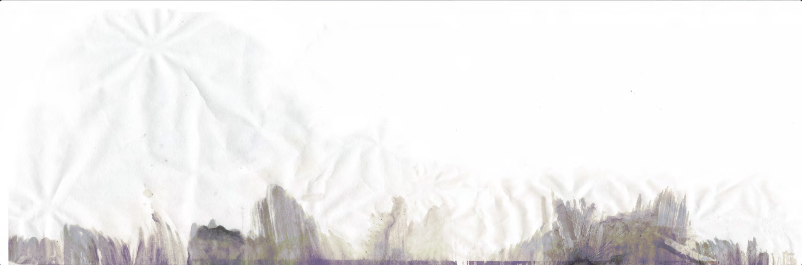

> Unit 1

Process

Critical Reflection

Course Contexts

Artist Statement
> Gallery

Track
Digital Painting, Photopolymer Gravure

Back Home
Mixed-media

Step-bite practice
Etching and Pastel
> Miscellaneous
Exploration and Experimentation with Different Printmaking Mediums


Process
【Unit 1】 Main Project - Track
Experimented with and practiced various printmaking techniques and modes of expression, and ultimately settled on polymer.


First recorded common birdsongs from different environments (urban, suburban, and forest).


Then selected various types, processed them on a computer—denoising, cutting, editing, and arranging the audio tracks.
Finally, composed them into spectrograms that visually represented my envisioned effect.
Processed the audio by applying a discrete Fourier transform for each frame, extracting spectrograms to visualize the sound data.
Technical reference: https://www.youtube.com/watch?v=-Yxj3yfvY-4


In a sense, I tend to lean toward a minimalist cityscape when working on the composition, forming impressions of sound-originating areas.
However, I wish to maintain an openness in interpretation, inspiring more reflections on scenes of industrialization and nature, such as subway tracks, the reflection of the Thames, or rows of trees.

Transferred the patterns, experimented with different etching techniques with Brian's support, until achieving the desired result.


> Pop-Up Show
During this process, I discovered many meaningful ways to communicate and exchange ideas. I received a variety of comments on my artwork.
The tech teachers provided valuable insights and suggestions regarding the handling of visuals, while my classmates gathered to discuss the amount of information within the compositions and their final structures.
I truly enjoyed hearing viewers speculate whether the visuals were related to the audio tracks, as well as their interpretations of the artwork's themes.
My work represents "sound," and simultaneously, I received many different “voices” from the audience. This, I believe, is precisely what I hoped to achieve.
During the exhibition, Jo and Leo shared their perspectives on displaying, curating, and selecting my work. Their input taught me a great deal, as I had almost no prior knowledge in this area. I also came to realize how crucial the presentation of an exhibition is for delivering an intended experience to the audience—something that cannot be ignored.
My smaller pieces were displayed on different walls and in various areas, which, I believe, successfully conveyed the sense of spatiality I aimed for.
In another instance, I combined one of my artworks with a classmate’s fabric project and hid it in a separate space. It served as a small interaction and was somehow fun to explore.
Critical Reflection
【Unit 1】
> Introspections on the Foundations of Creation: Symbiosis, Connection, and Communication
All these experiences and reflections have crystallized into three key themes.
I have long been interested in the relationship between nature and man. My childhood in a rural village nestled among mountains in China, where I had close daily interactions with various flora and fauna.
The pandemic lockdown offered a new perspective on this connection. It is a period of intense loneliness and personal turmoil for me. In the midst of physical exhaustion and political restrictions, my only connection seemed to be with my pet parrot and houseplants. While they remained untouched by the massive social upheaval, this tranquility was underpinned by my financial situation. Meanwhile, I also witnessed how natural forces could override social constructs, and how social constructs overwhelmed individual lives with natural forces. This phenomenon is a perfect reflection of the complexities of living in the Anthropocene.
Since Michel Foucault's The Order of Things (1970) introduced the metaphor of historicity and the discontinuity of knowledge as resembling beach sand shaped by waves, many eco-philosophers have critiqued anthropocentrism and argued for a more egalitarian perceptual relationship between humans and the natural world.
Although Johanna Love, my tutor introduced me to this concept, I remain, perhaps inevitably, a partial practitioner of posthumanism, as my work is rooted in a mirrored "alterity". Meanwhile, she also recommended a book by James Bridle, Ways of Being (2022), which explores the nonhuman world "suddenly alive with intelligence and agency" while humanity is "utterly entangled with the more-than-human world". He argues that we must learn to live with the world rather than trying to dominate it.


For his work, the future lies in the relationships and connections between the human and non-human worlds. For me, my initial experience of arriving in London alone and adapting to a drastically new environment paralleled the pandemic period, and also with only pets and plants as companions. the "non-human" part must be them.
In focusing on animals, I have been noticing Roger Ballen's photographic work, particularly the metaphors he portrays in the relationship between South African communities and their pets. When I look at my companions, whose inner worlds I cannot fully comprehend, as the animal philosopher Jacques Derrida noted in The Animal That Therefore I Am (2008), "the gaze embodies the concept of alterity-the recognition of the other as different from oneself." He argues that the moment of being seen by his cat, which prompts a profound inquiry into self-awareness and identity, animals represent an absolute otherness that challenges human self-awareness.


And I've come to realize that I cannot escape using 'the other' to narrate human stories, despite my attempts to transcend it.
This is an interesting phenomenon that I found my thinking may have mixed with some existential reflections. Albert Camus' discussion in The Myth of Sisyphus (1955) of the struggle between the individual and the constraints of society. The dependent relationship between humans and flora or fauna in urban environments reflects this conscious or unconscious resistance, or even perhaps escape, yet it serves as a means of navigating social frameworks and redefining personal identity. The individual's task, much like that of Sisyphus, is to navigate societal expectations through consciousness and resistance. Engaging with the collective unconscious of society, meanwhile finding ways to connect one's own values and beliefs.
This is related to the juxtaposition of the "superego" and the "id. In Tang Dynasty China, Zhang Zao has a famous saying, "外师造化，中得心源，" (Lidai Minghua Ji). It means to learn externally from nature and internally from the source of the heart. For me, this means that if I want to get something from the outside world as an expression of myself, it has to be the "Id". I would argue that the essence of art is the continued articulation and communication of the most primal and authentic self as a means of negotiating between social constraints and individual authenticity.
> Sound Practice
The visual theme of Unit 1 gradually took shape.
My goal is to create a sense of communication through sound, an experience that activates the perception of visual-auditory illusions. This experience is designed to transcend geographical and temporal boundaries, presenting a visible representation of changes in time and space. Sound, as the most accessible means of communication beyond text, serves as the foundation for this exploration.
Then I learned from William Kentridge's work and animated films, which offered a direct and pure approach to storytelling through sound. Making videos was an enjoyable process; I loved seeing things come to life through movement. However, I have yet to find a satisfying harmonic balance in this approach.


Meanwhile, I am exploring another method that emphasizes the relationship between sound and space (environment), and how different entities receive sound differently.
As I sought out more posthumanist work, Suzanne Anker's creations inspired me to think more deeply about how to "write" layers of information into an image. This shifted my focus to embedding meaning and complexity in visual forms, enriching the dialogue between sound and image.


> The Subject of "The Other": Birds
Birds retain their mysterious migratory patterns and ubiquitous presence in both urban and rural soundscapes, creating a linear structure marked by strong regional characteristics and variations.
I want to explore how birds inhabit both human-dominated environments like cities and nature-dominated spaces like forests, using them as a medium to symmetrically break the dichotomy between these two contrasting realms. Additionally, my personal records of birdwatching in the wild provide a rich archive of observations, and moving to London introduced me to a completely new ecological setting. The coexistence of birds and humans in urban spaces highlights regional contrasts, offering a fresh perspective.
Human birdwatching, in a way, acts as an anchor point. That fleeting moment becomes a snapshot, forever defining not only the place and birds but also your state of mind at the time—how you felt and how you viewed life.
In my work I want to experiment with different ways of emphasising the relationship between sound and space (or environment), and to explore how different beings perceive sound. This notion of difference is not limited to humans and birds, but extends to the diversity among humans themselves: like John Cage, he advocated random procedures in music, incorporating found sounds, noise and alternative instruments into his compositions.


I was fortunate to be introduced to the work of Victoria Arney, an artist deeply concerned with the resonance of land and place. Her practice of capturing birdsong and sound waves using sonograms inspired me to think about how sound waves are received differently by different species and individuals. Her use of large-scale woodcuts and decorative patterns on large canvases made a deep impression on me and encouraged me to consider how material, scale, and meaning might intersect in my own work.
If John Cage and Suzanne Anker made me realise that I could and should visualise the informational qualities of sound, Victoria Arney's approach to sound waves made me see sound almost as a raw material, rather than just a component used exclusively in video. And I begin to consider how different creatures and individuals might experience the reception of both information. I hope to reflect these differences not only between humans and birds, or on a biological level, but also between humans themselves - as receivers, as audiences with distinct minds capable of nuanced communication.


> Etching Print
One of the valuable opportunities I encountered after arriving at Camberwell was access to resources that allowed me to learn and use photoetching. This technique is remarkable in its profoundly Anthropocene nature: a fusion of modern technology and natural corrosion, materialised on a single metal plate.
I have always believed that drawing is a way of communicating with the world without a specific language. Although I also write, I often feel that when something is expressed through words, it collapses into ordinary letters and characters and loses its essence. Ideally, I hope that a painting can be what it means, relying on its own intrinsic rationality as a subject.
The resources available in London have allowed me to delve deeper into this concept. Inspired by the colours of Impressionism, I have printed many layers and different tones on the plates to create atmospheres that reflect different times of day. However, I am not entirely satisfied with the final result and hope to have more time to explore a sense of balance. Not just the connection between sound, and I want to focus more on printmaking and exploring materials, working on larger pieces.


Bibliographic references:
1. Foucault, M. (1970). The Order of Things: An Archaeology of the Human Sciences. London: Tavistock Publications.
2. Jacques, D. (2008). The Animal That Therefore I Am. Frence: Éditions Galilée.
3.Camus, A. (1955). The Myth of Sisyphus. London: Hamish Hamilton Limited.
4. Yanyuan Z. (Tang). Lidai Minghua Ji(The records of famous paintings of different dynasties).
5. Reed, D. A. (2017). Hearing: An Introduction to Psychological and Physiological Acoustics, 6th Ed. Boca Raton.
6. Robert J. D. (2000). Comparative Hearing: Birds and Reptiles: 13 (Springer Handbook of Auditory Research, 13). Springer.
7. Edward R. (2001). The Visual Display of Quantitative Information, 2nd Ed.
8. Tania K. (2014). Drawing Water: Drawing as a Mechanism for Exploration. Fruitmarket Gallery.
9. Christof M, Brandon L. (2001). Writing Aloud: The Sonics of Language. Errant Bodies.
10. Su Xiu, Zhu Xi. Progress in research of birdsong. Journal of Zhejiang Forestry College, no. 3, 2006, pp. 323-327
11. Karin V. M. (1993). The Sound of Painting: Music in Modern Art. London: Prestel. 128pp.
12. Paul R. (2011). Sensuous Geographies: Body, Sense and Place. London: Routledge.
Course Contexts
【Unit 1】

Installation view of the series Tensed Muscles,
Hand-drawn coloured pencil drawing on plywood
with collaged C-Type prints, 2021
Image courtesy of Sid Motion Gallery and the artist.
Photo by Andy Keate, 2021
My first lecture at Camberwell was given by Steffi Klenz, an artist who combines “social photography” with data-based approaches. I found her formal compositions highly engaging. I often wonder: how can we get viewers to spend more time gazing at a single image? Or, to invert the question, why do I myself linger on certain images? To me, painting is fundamentally driven by visuals—structure, color, texture, and tangible qualities are all decisive factors in holding the viewer’s attention. I have always felt my work lacks a sense of design and compositional rigor, and Steffi’s interplay of points, lines, and planes adds a strong “formal beauty” to her images. She also stressed that her work is very basic in its focus on “communication” and “language,” referencing Freud’s idea that the body speaks. Meanwhile, I recall Wolfgang Tillmans mentioning in a past lecture that “I guess when one talks about art and making art it is by nature language driven. But visual art is not primarily driven by language and there is a dichotomy in that when one is, on the one hand, constantly forced to talk about it, and language seems to favor ideas, and, on the other hand, one also shouldn’t blindly follow any idea that comes to mind. It’s a difficult equilibrium.”

installation, laser etching with graphite and ink on paper,
individual paper sheets 120cm x 80cm,
installation sizes variable
Steffi Klenz highlighted the concept of “visual language,” and in her own work seeks a balance between natural language and the visual realm. Whether a piece is abstract or figurative, the final output is always figurative in some sense. Upon seeing it, viewers instinctively resort to “natural language” to identify the subject: “What is this? Why is it depicted in this way?” This relates to the issue of “information load.” If an artwork contains too much information, viewers may identify it in an instant and lose interest. If it contains too little, they might either dismiss it immediately or pause to repeatedly confirm their perceptions. For a creator aiming to resonate with the right audience, the second scenario is often more desirable.
Susan Sontag, in her essay Against Interpretation, notes that form and content in an artwork should not be separated, as over-interpretation can obscure the piece’s true essence. This mirrors the questions I contemplated during Johanna Love’s lecture and tutorials: How does one handle the amount of content in an artwork? The dust research creates a lot of content,, while I often find myself torn between pursuing an aesthetic framework or a cognitive one in my own practice.

graphite powder, Series of seven drawings,
22 x 15.4 cm 8 5/8 x 6 in (unframed) each, 2021
Anna Barriballz’s explorations with various media expanded my perspective considerably. She values the physicality of materials and the aspect of time spent observing them. This made me reflect on how my images might convey these qualities. I was particularly struck by her “After Image” series. I like the feeling of holding a small piece work in one’s hand, and especially the layering of multiple levels of her works. In that series, each underlying graphite drawing becomes more visible with every layer of transparency, reflecting a focus on the drawing process, the materials, the interplay of light and darkness, and an awareness of space and time—all without emphasizing a specific “theme.” I also spent some time experimenting with transparent layers in my own imagery, although I tend to lean toward a more interactive, comic-like style. And those research works don't do a good job of showing the end result. Still, may there is no single standard for how to approach media and imagery; it is an ongoing journey of exploration and revision. At the same time, I hope to avoid “ineffective thinking” and ensure that each attempt contributes to a deeper understanding of imagery and materials.
Artist Statement
【Unit 1】

I am deeply interested in nature, religion, and folklore. Through this project, I want to begin exploring the relationship between humanity and the world in the Anthropocene era.
On one hand, it is about individual self-fulfillment—seeking a connection with the world from the perspective of a small and limited self. On the other, it is about imagining a future of coexistence. Nature feels like an anchor for humanity, and perhaps this perceived "difference" is itself a form of connection and communication.
My work revolves around my current state of life, and my perception of nature as a member of the human species. Every living being appears so small under the gaze of the universe, and yet life itself feels so heavy. That balance is close to something mysterious.
I strive to explore the most sincere animal nature within human society, and to find a balance between different forms of expression—seeking harmony between narrative and emotional intensity.
Track
Digital Painting, Photopolymer Gravure
An attempt at auditory visualization, a practice in Photopolymer etching.


By the River at Dusk.


By the River at Dawn.


Embossings.


By the Train Station.
Monochrome Negatives.
> Archive:


Back Home
Mixed-media
My initial attempts at exploring different methods of expression.
Began with the idea of telling a story about life and death through a narratively driven video in a comic style.
In this work, I chose to emphasize the human voice.
After the tutorial, I realized that this approach still seemed to collapse my intended meaning to some extent.
Attempted to shift away from the idea of bluntly telling a story.
Meanwhile, birdsong was combined with robots as 'the other' to create this series.
And during this time my interest in working with transparent media grew.


Step-bite Practice
Etching and Pastel, 28.5 x 38cm
An (Incomplete) Record of Technique Practices


> Unit 2

Process

Critical Reflection

Contexts

Artist Statement
> Gallery

Gravity of Fallen
Laser-cut, Woodcut

Volcanic
SilkScreen and Monoprint

Gaze
SilkScreen and riso
Process
【Unit 2】 Main Project - Gravity of Fallen
I still want to continue the work I started last time. There are many audio recordings I haven’t finished working with yet. But this time, I want to approach the theme of landscape more deliberately—not just as something to be seen, but as something to be accessed through the sonic experience of place.

My tutor Johanna suggested that I go to different locations to feel nature and draw beneath it—under nature, so to speak."
By recording animal calls and mixing them with urban ambient sounds, I’m continuing to construct a kind of sonic terrain—one that doesn’t rely on visual representation, but still conveys a sense of place. These soundtracks are not just background—they directly shape the rhythm and density of the printed images.

I’m interested in the idea that landscape is not only what we see, but also what we hear, repeatedly, every day—often without noticing. For me, animals are an entry point into this idea—not as metaphors, but as real “neighbors” and sound-sources embedded in daily life.
Each layer becomes a kind of auditory cross-section of a space.


Formally, I’m working to translate the rhythms and textures of sound into visual structures—through repetition, interruption, and fragmentation in composition.
I’m still converting the frequency of these sounds into waveform drawings, turning them into tactile forms. I’ve been layering these sound-based shapes to build up visual fields that act almost like sonic topographies—each layer a kind of auditory cross-section of space, now combined with more personal experiences, gestures, and compositional choices of my own.
I began with silkscreen printing to lay down the image. My original intention was to build up a mountain-like layering effect using heavy acrylic pigment. I also experimented with combining screen print and monoprint on canvas, and produced some drawings using etching techniques. However, after a group critique, it seemed that presenting all these approaches together felt too scattered and inconsistent. The feedback wasn’t very positive.


I liked the weight and physicality of canvas, but screen printing didn’t seem well suited for showing the texture and grain of printmaking. Based on Jo’s suggestion, I decided to work with wood panels instead. I’m not very experienced with relief printing—preparing the boards, printing, and switching between different papers and inks took a huge amount of time.


I’m still trying to push further with the etching side of things as well, but deep biting the plates takes a long time. The project is still ongoing.

Critical Reflection
【Unit 2】
> Digesting Presence:
During the Christmas holidays I thought about my yearly summary and realised that ever since before I came to London, I had stopped sensing and sketching life for quite a long time. I also stopped commenting on or interacting with the presence of others in a space. Maybe it’s because the focus has been pulled in too close—so close that, apart from the pale screen I face every day for study and work, there’s nothing else in my sight.
What’s strange is that, when I think of these two different periods of life, the first thing that comes to mind is how far I was from the ground. The me who’s typing this lives on the first floor, in a small flat converted from an old residential building. There’s hardly a day I don’t wake up to birdsong. In the mornings, I hear the noise of the schoolyard downstairs, and at night, sometimes there’s a bit of chatter from the street or music from a few blocks away.
When I was in Changsha, my computer screen faced the bay window on the 28th floor. Outside were rows of high-rise skeletons, like fish tied by the tail and hung upside down in a market, waiting to be sold. Apart from car horns, street vendors shouting, and the wind, I could also hear some kind of low-frequency rumble and clanking from somewhere I couldn’t place. Sometimes I felt like I was living inside the body of a giant animal, constantly compressed by the walls of its stomach—and honestly, that feeling still hasn’t gone away. It’s just that the animal got smaller.
The transport was different, the roads were different—the whole world was different. China is immense, and somehow, after stepping into the rest of the world, it felt even more so. So vast it could sustain a whole human ecology on its own. Even if I had never left, there would’ve been more than enough to spend a lifetime digging into.
In The Magic Mountain, it says that all tenses end up tangled and blurred together, and the true form of life becomes a present continuous tense, stripped of all dimension, serving you the same soup every day. But it feels kind of absurd to talk about boredom in the context of eternity.
So one question keeps bothering me: How do I digest myself through what I create?
I need to explore the world I see, not just intellectually, but also through artistic means.


> Keyword: Sound
Judy Watson showed her works last year in the Queensland Art Gallery’s exhibition mudunama kundana wandaraba jarribirri (tomorrow the tree grows stronger). I didn’t get to see it in person, but a friend who did recommended her to me. She integrated the scientific data alongside a spectrogram, transforming the sound of breath into a spectrogram and plotting scientific charts, She wants to remind us of the existential threat of climate change in south-east Queensland. I found it fascinating how she presented three freshwater mussel shells, known as malu malu in Watson’s Waanyi language, in one of her works, set beneath an atmospheric shift rendered through spectrograms of water.


A joint article by the University of Florida, Florida Museum of Natural History, and the University of the Basque Country once studied the ecological and functional impact of something as simple as picking up seashells. The team suggested that “among all human interactions with the marine world, the act of picking up the remains of dead seashells on the beach may be the most overlooked and understudied.” I had honestly never realised that just taking a dead shell could affect hermit crabs that much.
In China, we have the tradition of gathering seafood on the beach when the tide is ebbing, which is called Gan Hai—similar to beachcombing—and I had never thought there was anything wrong with it. It is just gathering food, like any animal needing sustenance. I often think, perhaps the mere act of human survival already causes such an impact on nature. Is it not possible that human beings, too, belong to the natural cycle—though perhaps our need to gather and consume exceeds what is ecologically sustainable for any species? One or two actions may be harmless. But humans are too many. Two become a thousand, ten thousand. I’ve benefited from the comforts and privileges of human society—so how am I supposed to exclude myself, to claim some kind of fairness, when I try to look at nature as one of them?
Here, I would like to reference the Acoustic Niche Hypothesis, which proposes that in a mature ecosystem, each species’ vocalizations occupy a unique frequency bandwidth and are temporally adjusted to avoid overlap with others, thereby increasing communication efficiency. It is hypothesized that selective pressures on both efficiency and communicative complexity drive the evolution of spectral differentiation, with a limited number of species occupying distinct acoustic niches. Research shows that such differentiation leads to multi-timescale complexity within the soundscape, suggesting that evolving acoustic niches contribute directly to broader ecological complexity.
In one "phantom road" experiment, merely broadcasting road noise in a Rocky Mountain forest led to a 25% decrease in the density of small songbirds at the study sites. The remaining individuals raised the peak frequency of their songs to avoid acoustic masking. Traffic noise lowered the mating success of low-frequency woodland bird species, and in the following two breeding seasons, a decline in nestling survival was also observed.
When I lived high up in a skyscraper, I couldn’t see the ground. But whenever it rained, I could always hear the sharp rings of e-bike alarms, long and piercing dog barks, the growing roar of motorcycle engines, and arguments from far off whose words I could never quite make out. I often felt that the world outside the window was this mysterious, chaotic plane. I wasn’t sure if it still counted as “nature,” or if it was purely human noise.
Hearing sounds from up high is, in a way, similar to adopting an aerial perspective. You only get fragments of information drifting up from the distant ground, and it takes a lot of imagination to hold them together. When I saw Christiane Baumgartner’s work—where she photographs video frames from a TV screen, selects specific still moments, processes them digitally, and transfers them onto wood for carving—I might want to try making woodblock works that carry that same sense of suspension.


I used photography to document all of this. The dynamic nature of sound frozen into still images. In February I came across Edward Burtynsky’s photography in the UAL library, and it caught me off guard, in a quiet way. His camera flattens the Earth into a particular kind of geometric beauty, like when I passed by factories in western China on the high-speed rail—factories standing against cliff-like mountains cut sharp and clean. It looked like a mountain cross-section. A specimen mountain, a sliced mountain, maybe something like that. The background sound was the deep hum of modern machines.


It made me realise the kind of landscape I wanted to carry those sounds back into—their origin, or perhaps simply where they were always meant to remain. And yet, I stilled them—then carried them into the city.
“The other” is always there. In Taoism there’s a concept: the soundless. The “soundless sound” is a kind of presence that doesn’t rely on language. I’m trying to express sound through image, and I think when sound becomes a vessel for meaning, its absence might be even more expressive—the so-called “sound of emptiness”, like the blank space in Chinese painting.
I want my work to be something that could hang from a tree in the middle of a field.
> Extended research
Initially, my research interest was in animal behaviour. At my mother’s home, I helped her raise cats, and my grandmother kept chickens, ducks, rabbits, and pigeons. I have parrots, corn snakes, and crested geckos. I studied a great deal about how these particular animals behave in order to get along with them, and also about how urban dwellers balance pet-keeping with coexistence. But since coming to London, I’ve naturally had to leave my animals behind—I can’t be responsible for them from so far away. So my focus has shifted: from animals to the acoustic texture of where they lived.
I’ve looked into many books at the UAL library on synesthesia, sound visualisation, and birdsong theory. I found that animal calls can be as intricate and compelling as piano chords—and some species even mimic musical structures. When discussing chords and imagery with friends, one thing that struck us was how artists after WWII all seemed to ask the same question: why can pop music appeal to almost everyone, while pop art seems to demand more empathy from its viewers?
Many artists have sought to connect visual art with music. Kandinsky, for instance, emphasised how a vivid red could stir the heart like the sound of a trumpet. Even earlier, Whistler structured his compositions as tonal harmonies—arrangements of colours like a musical concerto. Later developments in abstract art saw such synesthetic approaches proliferate in ever more complex and expressive forms.
I’ve come to realise that every sound we hear is composed of layers upon layers of overtones. The most basic wave is something like a sine wave. So even one piano note is actually made of many stacked frequencies. The way these overtones are layered determines its tone colour—just as the human eye, with only three types of cone cells, blends wavelengths to produce the full spectrum of perceived colour.
Chords are like impressionist blends—just as a mixed hue can carry emotion in painting, a multi-interval chord can hold emotion in music.
I go to exhibitions, concerts, observe stage design and promotional materials. I talk to friends who compose music and realise, to them, mixed colours feel like single units, but musical chords can be taken apart and analysed individually. It’s fascinating.
As for me—after seeing the work of many sound artists—I’ve come to understand that my interest lies less in synesthetic precision, and more in what remains unspoken. Musical emotions stretch over time, but visual emotions are static. I don’t want viewers to over-interpret the artist’s feelings during the process—I want them to notice the tremors that settle in the work’s corners.
I want to keep creating works based on the sound recordings I’ve made—the emotions of the landscapes I saw, what they made me think of. I might keep going. Perhaps one day, this will lead to a collaboration with musicians.


Bibliographic references:
1. Mann, T. (1995). The Magic Mountain. Trans. John E. Woods. New York: Alfred A. Knopf.
2. Baumgartner, C. (2018). Another Country. Edited by Lisa Fischman. Munich: Hirmer Publishers.
3. Kowalewski, M., Domènech, R., & Martinell, J. (2014). Vanishing clams on an Iberian beach: Local consequences and global implications of accelerating loss of shells to tourism. PLOS ONE, 9(1), e83615. https://doi.org/10.1371/journal.pone.0083615
4. Burtynsky, E. (2003). Manufactured landscapes: The photographs of Edward Burtynsky. Ottawa: National Gallery of Canada New Haven: Yale University Press.
5. Burtynsky, E. (2009). Oil. Göttingen: Steidl.
6. Burtynsky, E. (2007). Quarries. Göttingen: Steidl.
7. Berman, G. (1999). Synesthesia and the Arts. Leonardo, 32(1), 15–22.
8. Brougher, K., Strick, J., Wiseman, A., & Zilczer, J. (2005). Visual Music: Synaesthesia in Art and Music Since 1900. London: Thames & Hudson.
9. Gablik, S. (1991). The Reenchantment of Art. New York: Thames & Hudson.
10. Kandinsky, W. (2006). Concerning the Spiritual in Art. London: Tate Publishing.
11. Karin V. M. (1993). The Sound of Painting: Music in Modern Art. London: Prestel. 128pp.
12. van Campen, C. (2007). The Hidden Sense: Synesthesia in Art and Science. Cambridge, MA: MIT Press.
13. Cage, J. (1961). Silence: Lectures and Writings. Middletown, CT: Wesleyan University Press.
Contexts
【Unit 2】

photo at The Drawing Room
Emma McNally’s The Earth is Knot Flat is probably the most memorable solo exhibition I’ve ever seen. We had to use flashlights to view the works—the beam cutting through the darkness of the space, landing on layers of treated paper stacked together. The graphite marks reflected a silvery light, like starlight in the universe or amethyst embedded in rock walls. It genuinely stunned me.
I’ve always been slow to realise that exhibition design is part of the work itself, but it’s rare to see such a complete and personal use of space. The stacked paper rose and fell like mountain ranges. Background sound moved through the darkness, threads were suspended in mid-air, and video projections filled the surrounding walls. Light and reflection gave everything a kind of disoriented atmosphere. I felt like I was inside the world she created—inside her version of the Earth.
It left a deep impression and taught me a lot. It was also the first time I truly understood how material choices could be used like that, and how a whole exhibition environment could be shaped. I really do love volcanoes and starry skies.

photo at The Modern Art Oxford
Belkis Ayón’s Sikán Illuminations at Modern Art Oxford left a strong impression on me, especially because of her creative process. My classmate and I had been studying her unique use of collagraphy—she only used cardboard, yet the images came out so complete. We spent a long time in the gallery examining her printing plates, trying to figure out how she achieved those textures and patterns. We guessed she might have used materials like wax and glue.
It was also the first time I realised collagraphy could be used like that.
Her works are large, with dark human figures just standing there—they made me think about how a piece can be so simple, yet carry such weight in black and white. I started wondering whether I also need to work on a larger scale to really create the atmosphere I want.

photo at The Clifford Chance
Susan Aldworth’s small solo exhibition Visual Equivalents – Exploring Mind and Matter in Print left a strong impression on me, especially in how she visualizes neural imagery, consciousness, and the human brain. Her exploration of “mind and matter” in visual form is something I find very valuable for developing my own pictorial language. Her use of copper etching, cyanotype, and a range of techniques made each work rich in visual layers and depth.
I’ve always been drawn to the image of the jellyfish. The way her works are presented reminded me of these interconnected creatures. I know that some deep-sea animals and insects operate with a kind of collective intelligence—their individual bodies share a single cognitive ocean, like a collective unconscious in humans, but more focused, more communicable. I really like that image, and the way she stays so focused on her themes in every single piece.
You can almost see the line of progression in her work, and I really enjoy that part of an artist’s practice—like witnessing the character arc of someone in a story. It’s something I find deeply inspiring, and very much worth learning from.
Artist Statement
【Unit 2】


I’ve always been deeply interested in nature, religion, mysticism, and alchemy of printmaking. So in this project, I focused more on the state and structure of blocks. Building on my previous audio track experiments, I further developed the visuals into a more image-based form.
In this series, I wanted to create a sense of a landscape held still in a long gaze—while at the same time, the landscape itself seems to gaze back at you, faintly.
For a long time, I’ve been wondering: if a person only experiences what they experience, only thinks what they think—then isn’t everything, in the end, just happening in the narrow space between oneself and the world? And yet experience cannot be exchanged, not even truly replicated. That might be the essence of loneliness. Still, I hope my work can become a kind of communication—one that, even if not fully shared, can still be co-experienced.
There will always be things we don’t understand, and things we can’t understand, between ourselves and others. Even the most articulate person, with all the language in the world, can’t fully bridge that gap. It’s like speaking across species. Or across planets. We only believe we share something.
But I still hope we are all survivors of our own loneliness—that we can still hear the same vibrations, and still see the same material image before us. we all live under the same nature.
> Unit 3 Proposal:

Gravity of Fallen
Laser-cut, Woodcut
Building on the last project — expanding into a bigger image from birdsongs and music.


Resonant of the Solar Temple


Gravity of Fallen, Relief Print, 16 x 100cm
> Wood Block


> Archive:

Volcanic
SilkScreen and Monoprint
Field recordings collected at Mount Unzen, Fugen-dake, Shimabara Peninsula, Nagasaki, Japan. Capturing subsonic vibrations and low-frequency geophysical resonance, filtered to reveal the surrounding acoustic ecology.
The work was inspired by the profound personal impact of the documentary about about the volcanologist couple Katia and Maurice Krafft, Fire of Love.
> Archive:
Gaze
SilkScreen and Riso
Field recordings collected in Epping Forest, tracing the interplay between the acoustic ecology of wildlife rhythms and the stillness of the urban environment.
The work was inspired by the meditative sensibility of Derek Jarman’s Blue.


Idea & Development
【Keyword】: landscape, habitat, vibration, sensory translation, ecological soundscape.
【Primary informed】: Three books that primarily informed the project in its early stage.
— David Toop, Sinister Resonance: The Mediumship of the Listener
【Recording Map】
· London · Hokkaido · Tibet · Aswan
Select various types of sound, processed them on a computer—denoising, cutting, editing, and arranging the audio tracks.
Compose them into spectrograms that visually represented my envisioned effect.
Processed the audio by applying a discrete Fourier transform for each frame, extracting spectrograms to visualize the sound data.
Technical reference: https://www.youtube.com/watch?v=-Yxj3yfvY-4
【Form Experiments】:

later translated into a spectrogram.
Context
Victoria Arney
· Aquatint · Deep-etching · Step-bite · Spit-bite
Edward Burtynsky

To re-examine the materiality of data within the image, I began observing how sound-like textures were distorted and displaced through the processes of etching and inking. Rather than depicting a particular landscape, I wanted them to form geological structures within the screen itself.
After testing different colours, I still returned to blue, deep blue: a tone that belongs to the sea, the sky, and the inner depths of space, yet also to technical drawings and the visual language of data. The act of inking resembles that of mapping, both are forms of detection, tracing the echoes of matter and memory.
The tiny particles, fractured lines, and incidental impressions together form a kind of surface of listening. On this surface, the vibration of sound and the temporality of nature are compressed onto the same plane, a resonance of perception.
Christiane Baumgartner
Tracy Hill


Beneath the Sky, Between the Structure
Screen-etching
Resonant of the Solar Temple
Laser-cut, Woodcut
Track
Photopolymer Gravure
Volcanic
SilkScreen and Monoprint
Gaze
SilkScreen and Riso
Back home
Mixed-media
Step-bite Etching and Pastel
Critical Reflection
【Unit 3】
> Beginning Points
My work often begins with observing nature, which has always been my main interest. I grew up in a rural area nestled among mountains in China, where I had close daily interactions with local flora and fauna. This experience has long shaped my fascination with the relationship between humans and the wild.
Initially, my research interests focused on animal behaviour and folk stories. In the countryside, I was surrounded by many kinds of animals that needed care and attention, and later, when I worked at a reptile and exotic pet store, I found myself applying the same knowledge in a different context. I studied a great deal about how these animals behave in order to understand and live alongside them. Moving constantly between rural and urban life also made me curious about how city dwellers balance pet-keeping with coexistence in their environments.
But since my life has always involved leaving places behind, my focus has naturally shifted more toward the places themselves. After stepping into the wider world beyond China, I entered a completely different ecological map, one so vast and immense that it seemed to unfold into an endless conversation. My attention has expanded to the sites themselves, to their textures, rhythms, and moods, and to how this vastness can be felt rather than merely seen. After coming to London this year, there has been a brand-new life mode of experiencing the urban landscape and natural environment. It has given me the chance to pause and let my perspective settle on the landscape itself, especially on the practice of exploring its acoustic textures.
My work has centred on the idea of sound accompanying landscape. At its core, my research explores how sound can act as a mediumtranslated into visual form to represent ecological landscapes and the non-human presence within them.
Choosing this medium came from a period of isolation, when the only way to connect with people was through screens. I found myself spent more time to listening, and when I realized this point, I begin to notice how sound filled the silence: during lockdown days, or in the after-the-funeral quiet, the music I chose, the the calls from my pets. My ears kept reaching for something alive: the wind moving through trees, the distant rhythm of birds, even the hum of city machines that proved the world was still breathing.
In the city, everything was very still and lonely, and the only thing left was to listen — with my work and with my life.
Since I come from a background in printmaking, it naturally led me to think about translating sound into visual form. Nature itself has texture, and voice is one of its ways of expression.”
At the beginning, I was reading authors such as David Toop and Salomé Voegelin, whose writings on sensory and synesthetic experience made me realize that sound can shape how we understand space. In Sinister Resonance: The Mediumship of the Listener, Toop proposes that “sound is the ghost of memory, the delayed form of time,” suggesting that listening is not merely an act of hearing but an encounter with the temporal residue of the world. He also writes that painting and photography allow us to see, whereas sound allows us to be permeated.
Without evaluation, this idea intensified my own desire for visual images to become permeable. Through the medium of printmaking, exploring how the material processes of plate-making, shaped by vibration and time, could render the experience of atmosphere visible: how listening could become a visual practice.
So, the main point is landscape, habitat, vibration, sensory translation, and ecological soundscape.
> Development of Ideas
The practice began as an experiment, learning from the creations of Victoria Arney, Suzanne Anker, and John Cage. Victoria Arney’s works with birdsong and sound waves, and Suzanne Anker’s projects inspired me to think more deeply about how to "write" layers of information into an image. John Cage, who advocated random procedures in music, incorporated found sounds, noise, and alternative instruments into his compositions. Through them, I began to treat sound as a kind of raw material — something tangible and sculptural.
Inspired by that, I use both printmaking and digital processes to trace the vibrations of landscapes and to press those moments — the vibe — onto paper, creating images that capture their resonance.
I use recordings from my daily birdwatching trips across Asia and Europe, from rural to urban environments. Each sound comes from a different time, place, and species. From this growing archive, I select and separate frequencies to shape their distinct textures and rhythms.
I mainly worked with spectrograms as my visual material, producing step-by-step digital signal processing analyses that used discrete Fourier transforms to analyze and filter specific frequencies. These were then developed into initial printed patterns.
I chose polymer first and spent a lot of time etching, repeatedly working on the same plate, and also producing many different ones. I experimented with various etching techniques and used different techniques for each plate, hoping they would form a series of different feelings that could be presented side by side.
This process combines artificial methods with natural materials and reactions. When working with acid and resin, the time of chemical sedimentation merges with the duration of sound, achieving something deeply organic. It becomes a dialogue between the man-made and the natural.
While making each plate, I gradually added information and thought about how to balance the information within my images and how far they drift between the concrete and the abstract.
> Synesthesia and Colour Harmony
I’ve looked into many books at the UAL library on synesthesia, sound visualization theory. I found that one thing impressed me was how artists after WWII all seemed to ask the same question: why can pop music appeal to almost everyone, while pop art seems to demand more empathy from its viewers?
Many artists have sought to connect visual art with music. Kandinsky, for instance, emphasized how a vivid red could stir the heart like the sound of a trumpet. Even earlier, Whistler structured his compositions as tonal harmonies, arranging colors like a musical concerto. Later developments in abstract art expanded such synesthetic approaches into ever more complex and expressive forms.
I go to exhibitions and concerts, observe stage design and promotional materials. I talk to friends who compose music and realize that, to them, mixed colors feel like single units, but musical chords can be separated and analyzed individually. It’s fascinating.
After seeing the work of many sound artists, I’ve come to understand that my interest lies less in synesthetic precision and more in what remains unspoken, how musical emotion unfolds over time while visual emotion stays still. I’ve tried to translate those emotional landscapes I saw into images: how they made me feel, how they resonated with memory.
> Aura and Alterity
During this time, I kept thinking about Michel Foucault's The Order of Things (1970) and his concept of "alterity," as well as the concept of "aura" introduced by Walter Benjamin in The Work of Art in the Age of Mechanical Reproduction.br>
The reproduction of images, which in my context naturally refers to the act of plate-making and printing, is something through which I wish to preserve the aura of certain captured fragments of sound if possible. From my understanding, "aura" describes the unique presence of an artwork that exists only in its singular "here and now." It represents the pursuit of an atmospheric quality within a work that is grounded in both psychology and aesthetics. It would be nice to ensure that an image would preserve its aura throughout the printing process, or cultivate a distinct aura in different display contexts.
The inspiration from Edward Burtynsky came from his photographs of landscapes, which made me realize that the planet itself already forms its own earthly compositions among the organic aura, and this is the kind of alterity I keep searching for. The inherent narrative within images of natural and industrial landscapes makes it possible to preserve that aura, or perhaps to reveal it anew in a positive way.
So, I tried to intensify my process, layering and marking until the images began to resemble slices of terrain: mountains, forests, or rivers. The background sound was the deep hum of machines from the modern world.
The result is a series of images with tactile textures created through screen-printing. My original intention was to build up a mountain-like layering effect using heavy acrylic pigment. I also experimented with combining screen print and monoprint on canvas, layering sound-based shapes to build visual fields that act almost like sonic topographies. Each layer a kind of auditory cross-section of space, now intertwined with personal experiences, gestures, and compositional choices. Together, they reveal how the soundscape transforms into a landscape in itself, each print plate functioning as both a visual field and an echo of the material world.
> Experimentation and Reflection
I’ve been experimenting with different printmaking techniques, trying to explore various possibilities through different materials and processes. In The Magic Mountain, it says that all tenses end up tangled and blurred together, and the true form of life becomes a present continuous tense, stripped of all dimensions, serving you the same soup every day. When I only get fragments of information drifting up from the distant ground, it takes a lot of imagination to hold them together.
When I saw Judy Watson showed her works last year in the Queensland Art Gallery’s exhibition mudunama kundana wandaraba jarribirri (tomorrow the tree grows stronger). Though not in person, but through a friend’s recommendation. She integrated the scientific data alongside a spectrogram, transforming the sound of breath into a spectrogram and plotting scientific charts, She wants to remind us of the existential threat of climate change in south-east Queensland. I found it fascinating how she presented three freshwater mussel shells, known as malu malu in Watson’s Waanyi language, in one of her works, set beneath an atmospheric shift rendered through spectrograms of water.
It made me think of a joint article by the University of Florida, Florida Museum of Natural History, and the University of the Basque Country once studied the ecological and functional impact of something as simple as picking up seashells. The team suggested that “among all human interactions with the marine world, the act of picking up the remains of dead seashells on the beach may be the most overlooked and understudied.”
I had honestly never realized that just taking a dead shell could affect hermit crabs that much.
In China, we have the tradition of gathering seafood on the beach when the tide is ebbing, which is called Gan Hai—similar to beachcombing—and I had never thought there was anything wrong with it. It is just gathering food, like any animal needing sustenance. I often think, perhaps the mere act of human survival already causes such an impact on nature. Is it not possible that human beings, too, belong to the natural cycle—though perhaps our need to gather and consume exceeds what is ecologically sustainable for any species? One or two actions may be harmless. But humans are too many. Two become a thousand, ten thousand. I’ve benefited from the comforts and privileges of human society, so how am I supposed to exclude myself, to claim some kind of fairness, when I try to look at nature as one of them?
Therefore, I turned to work on the intaglio and laser-cut works. I also tested larger formats , another way of reinterpreting Egypt’s ecological–cultural landscape. From this point, my works became more like situational records, reference the Acoustic Niche Hypothesis, which proposes that in a mature ecosystem, each species’ vocalizations occupy a unique frequency bandwidth, temporally adjusted to avoid overlap with others, thereby increasing communication efficiency.
It is hypothesized that selective pressures on both efficiency and communicative complexity drive the evolution of spectral differentiation, with a limited number of species occupying distinct acoustic niches. Research shows that such differentiation leads to multi-timescale complexity within the soundscape, suggesting that evolving acoustic niches contribute directly to broader ecological complexity.
In one "phantom road" experiment, merely broadcasting road noise in a Rocky Mountain Forest led to a 25% decrease in the density of small songbirds at the study sites. The remaining individuals raised the peak frequency of their songs to avoid acoustic masking. Traffic noise lowered the mating success of low-frequency woodland bird species, and in the following two breeding seasons, a decline in nestling survival was also observed.
During my time in Egypt, I recorded and analyzed different frequency bands from two temple sites，creating this soundscape. Every sound human hear is composed of layers upon layers of overtones. The most basic wave is something like a sine wave. So even the simplest tone, a birdsong or a dog’s bark, is actually made of many stacked frequencies. The way these overtones are layered determines its tone color, just as the human eye, with only three types of cone cells, blends wavelengths to produce the full spectrum of perceived color. Therefore, the natural world—here referring to the sensations experienced by the human senses—is like an Impressionist blend, just as a mixed hue can carry emotion in painting。
I analyzed these sound fragments in the same way, combining them into visual impressions of Egypt’s ecological atmosphere. It was a particular environment., Egypt is entirely commercialized for tourism. The temples are filled with layers of human sounds, birds flying freely overhead, droppings on the murals. There were too many voices, yet I tried to capture what felt most representative of the moment, like sketching what was worth seeing. Though when surrounded by human activity, I wasn’t sure if it still counted as “nature.” Perhaps humans will never be able to clearly define boundaries with each other. This concept is too broad, but it is still part of my creative process and my creative focus.
Building upon this, I was influenced by Tracy Hill, whose investigations into perception and frequencies have continuously shaped the direction of my projects, even if not as distinct turning points. I began experimenting with long-scroll formats that allow for more direct, continuous narratives. This work became a reflection and summary of my current phase.
It became the final outcome of my project. In the end, I returned to etching, not polymer, but a process combined with screen-photo resist, which allowed me to bring more intuitive and expressive marks into the plate-making.
This work serves as a visual culmination of my reflections on the ecological–cultural relationship throughout the year, and also embodies my personal experience within explore the connections between humans and the non-human in the post-human era, which this research has become part of my daily life.
Bibliographic references:
1. Foucault, M. (1970) The order of things: an archaeology of the human sciences. London: Tavistock Publications.
2. Benjamin, W. (2008) The work of art in the age of mechanical reproduction. London: Penguin.
3. Toop, D. (2010) Sinister resonance: the mediumship of the listener. New York: Continuum.
4. Voegelin, S. (2010) Listening to noise and silence: towards a philosophy of sound art. New York: Continuum.
5. Burtynsky, E. (2003) Manufactured landscapes: the photographs of Edward Burtynsky. Ottawa: National Gallery of Canada; New Haven: Yale University Press.
6. Burtynsky, E. (2007) Quarries. Göttingen: Steidl.
7. Burtynsky, E. (2009) Oil. Göttingen: Steidl.
8. Mann, T. (1995) The magic mountain. Translated by J. E. Woods. New York: Alfred A. Knopf.
9. Watson, J. (2023) mudunama kundana wandaraba jarribirri (tomorrow the tree grows stronger) [Exhibition]. Queensland Art Gallery | Gallery of Modern Art.
10. Kowalewski, M., Domènech, R. and Martinell, J. (2014) ‘Vanishing clams on an Iberian beach: local consequences and global implications of accelerating loss of shells to tourism’, PLOS ONE, 9(1), p. e83615. doi:10.1371/journal.pone.0083615.
11. Cage, J. (1961) Silence: lectures and writings. Middletown, CT: Wesleyan University Press.
12. Kandinsky, W. (2006) Concerning the spiritual in art. London: Tate Publishing.
13. von Maur, K. (1993) The sound of painting: music in modern art. London: Prestel.
14. Brougher, K., Strick, J., Wiseman, A. and Zilczer, J. (2005) Visual music: synaesthesia in art and music since 1900. London: Thames & Hudson.
15. Berman, G. (1999) ‘Synesthesia and the arts’, Leonardo, 32(1), pp. 15–22.
16. van Campen, C. (2007) The hidden sense: synesthesia in art and science. Cambridge, MA: MIT Press.
17. Rodaway, P. (2011) Sensuous geographies: body, sense and place. London: Routledge.
18. Kovats, T. (2014) Drawing water: drawing as a mechanism for exploration. Edinburgh: Fruitmarket Gallery.
19. Hill, T. (2020) Mapping the edge. Warrington: Warrington Museum & Art Gallery.
20. Baumgartner, C. (2018) Another country. Edited by L. Fischman. Munich: Hirmer Publishers.
21. Derrida, J. (2008) The animal that therefore I am. Paris: Éditions Galilée.
Artist Statement
【Unit 3】
I am deeply interested in nature, wildlife, and mythology-folklore. I am exploring the relationship between humanity and the world in the Anthropocene era.
On one hand, it is about individual self-fulfillment—seeking a connection with the world from the perspective of a small and limited self. On the other, it is about imagining a future of coexistence. Nature feels like an anchor for humanity, and perhaps this perceived "difference" is itself a form of connection and communication.
My work revolves around my current state of life, and my perception of nature as a member of the human species. Every living being appears so small under the gaze of the universe, and yet life itself feels so heavy. That balance is close to something mysterious.
I strive to explore the most sincere animal nature within human society, and to find a balance between different forms of expression—seeking harmony between narrative and emotional intensity.
Research Festival
【Unit 3】


Beneath the Sky, Between the Structure
Screen-etching
Building on the last project — expanding into a bigger image from birdsongs and music.


> Plate
> Archive:

Liu Qiongyu
Printmaker, illustrator, Cartoonist, and enthusiast of various genres of narratives.
Is open to hearing stories and always will be.